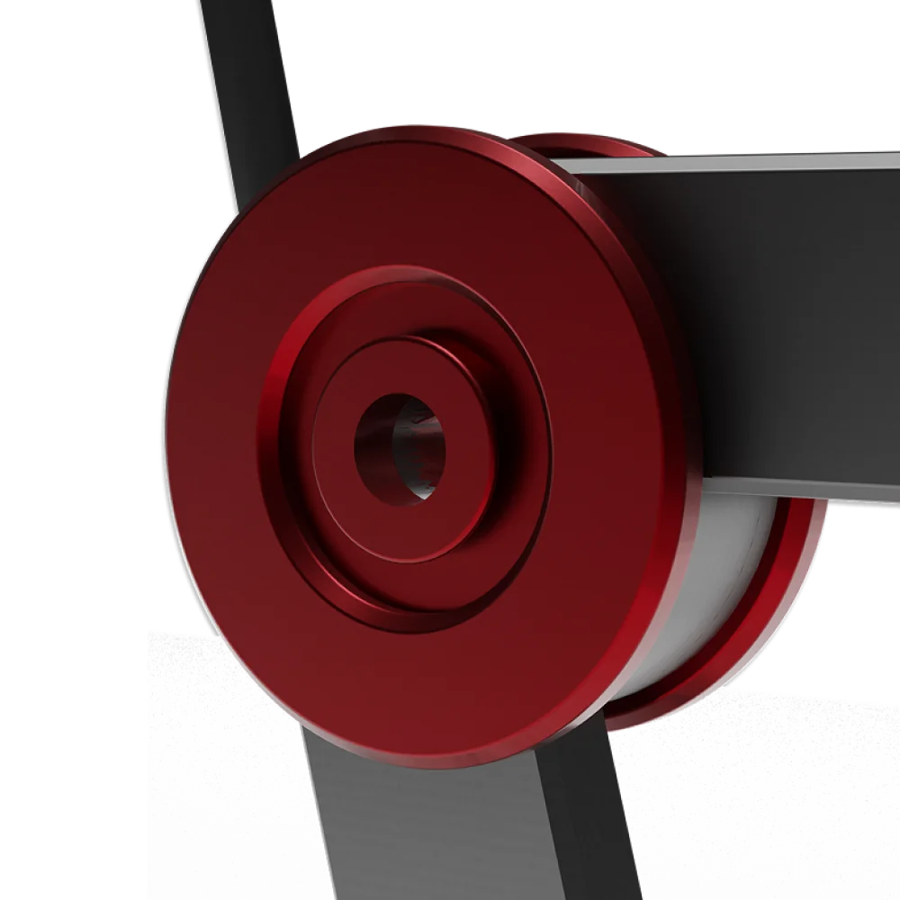

Vista esplosa

Vista esplosa

Aperta & ripiegata
Revo Bike nasce dal brief di progettare una bicicletta pieghevole. Il risultato è una proposta compatta ed essenziale, pensata per pendolari che integrano bici e mezzi pubblici. Design minimale, funzionalità chiara e chiusura intuitiva la rendono leggera, pratica e ideale per la mobilità urbana.